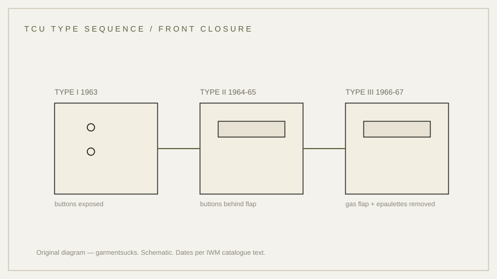

history · 1963
The tropical combat uniform: 1963, then two revisions
A uniform built by engineers: introduced in June 1963, then revised twice in four years.
probable Published 2026-11-13 · last checked 2026-11-13

1. Summary
The Tropical Combat Uniform was introduced in June 1963 after development and testing by the US Army Quartermaster Research and Engineering Command, based closely on the M-1942 Parachutist Uniform.
Three types followed: exposed pocket buttons on Type I, concealed buttons on Type II (1964–65), and on Type III (1966–67) the flap">gas flap and shoulder epaulettes were removed. Confidence: probable — a single institutional catalogue text records the sequence; no independent corroboration was found.
2. What this is
The Tropical Combat Uniform (TCU): the light cotton uniform issued for hot, humid climates, comprising jacket and trousers in OG-107 and, later, ERDL camouflage. Type I, II and III are successive patterns, not separate garments.
OG-107 is the olive-green shade code; ERDL is the four-colour leaf pattern. A gas flap is an inner panel behind the front closure; an epaulette is the shoulder strap.
3. Origin and context
The catalogue text records that the uniform was introduced in June 1963 after extensive development and testing by the Quartermaster Research and Engineering Command, and that it was based closely on the M-1942 Parachutist Uniform worn by airborne troops in the Second World War.
It was made of thin cotton-poplin, with three types eventually entering service. Types I and II were produced exclusively in Army Shade OG-107; Type III was produced in both OG-107 and ERDL camouflage.
4. How it works
Thin poplin dries quickly and packs small; a convertible collar and a button front let the jacket be opened for ventilation. The later changes were subtractions: buttons covered so they did not catch, a gas flap deleted when it was no longer needed, shoulder straps removed because they snagged.
The snagging explanation is inference from the changes; the catalogue describes what changed, not why.
5. Construction
The trousers are described as having a zip fly with a waist button, waist adjuster straps, seven belt loops, hip and rear slash pockets with concealed button flaps, and large expandable cargo pockets with concealed two-button flaps.
This describes Type III examples; the earlier types' pocket details are not described in the sources opened. The work order is inferred from garment construction.
6. Variants across eras
| Type | Date | Change | Source status |
|---|---|---|---|
| Type I | 1963 | pocket flaps with exposed buttons; OG-107 only | IWM catalogue text |
| Type II | 1964–65 | buttons concealed; OG-107 only | IWM catalogue text |
| Type III | 1966–67 | gas flap and shoulder epaulettes removed; OG-107 and ERDL | IWM catalogue text |
| Modern reproduction | present | often simplified closures and flaps | market observation |
7. Telling an original from a reproduction
The fastest test is the front closure: exposed buttons place a jacket before the Type II change; concealed buttons with a flap place it from 1964–65 onward. Shoulder straps that are present suggest an earlier type; their absence suggests Type III.
Check the label and the cloth as well: thin poplin with a crisp hand, and period stamping inside the waistband.
8. Common mistakes and myths
The first mistake is calling every jungle jacket a Type III: the three types differ in closure and fittings, and the differences survive on the garment.
The second is repeating the dates without the source: June 1963, 1964–65 and 1966–67 all come from one institutional description, not from three independent documents.
9. How to read it in wear
The uniform reads through the front and the pockets: buttons visible or hidden, flaps present or absent, straps on the shoulders or not. Open the collar and the jacket becomes a shirt-jacket; close it and it reads as a field garment.
10. Modern designer trail
The jungle jacket is a standard reference for designers reworking military outerwear, usually keeping the four pockets and changing the cloth or the proportion. No direct-influence claim is made here.
11. Specification
The left column records what the catalogue states; the right column is empty because no reproduction figures are proposed.
| Recorded in sources | Reproduction suggestion |
|---|---|
| Introduced June 1963 by the QM Research and Engineering Command; based closely on the M-1942 Parachutist Uniform (IWM catalogue text) | — |
| Thin cotton-poplin; Types I–II OG-107 only; Type III OG-107 and ERDL (IWM catalogue text) | — |
| Type I exposed buttons; Type II concealed buttons 1964–65; Type III gas flap and epaulettes removed 1966–67 (IWM catalogue text) | — |
12. Questions and exercises
1) Are the pocket buttons on a jacket you own exposed or covered by a flap? 2) Are there shoulder straps? 3) Which type would those two answers indicate, and where would you check the label?

Glossary
- TCU
- Tropical Combat Uniform, 1963 onward.
- OG-107
- US olive-green shade code.
- ERDL
- Four-colour leaf camouflage pattern.
- Gas flap
- Inner panel behind the front closure.
- Epaulette
- Shoulder strap on a jacket.
Sources
Claims & sources
| Claim | Source | Tier | URL | Status |
|---|---|---|---|---|
| TCU introduced June 1963 after development and testing by the QM Research and Engineering Command | IWM catalogue label text | T1 | link | verified (catalogue statement) |
| Based closely on the M-1942 Parachutist Uniform | IWM catalogue label text | T1 | link | verified (catalogue statement) |
| Thin cotton-poplin; Types I–II OG-107 only; Type III OG-107 and ERDL | IWM catalogue label text | T1 | link | verified (catalogue statement) |
| Type I exposed buttons; Type II concealed 1964–65; Type III gas flap and epaulettes removed 1966–67 | IWM catalogue label text | T1 | link | verified (catalogue statement) |